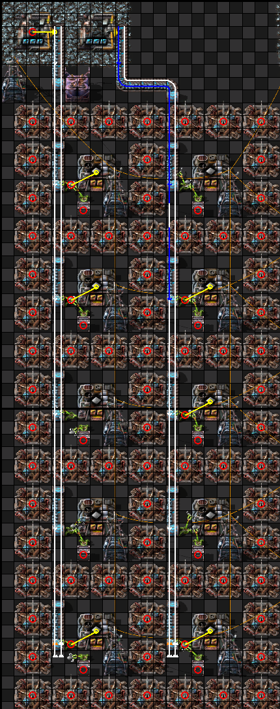
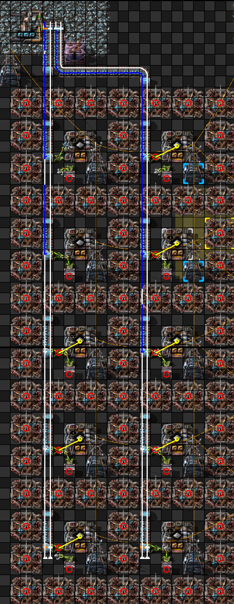
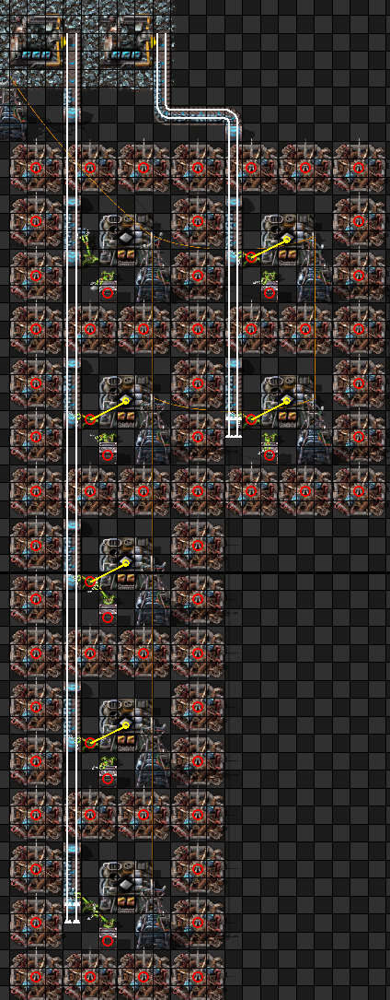
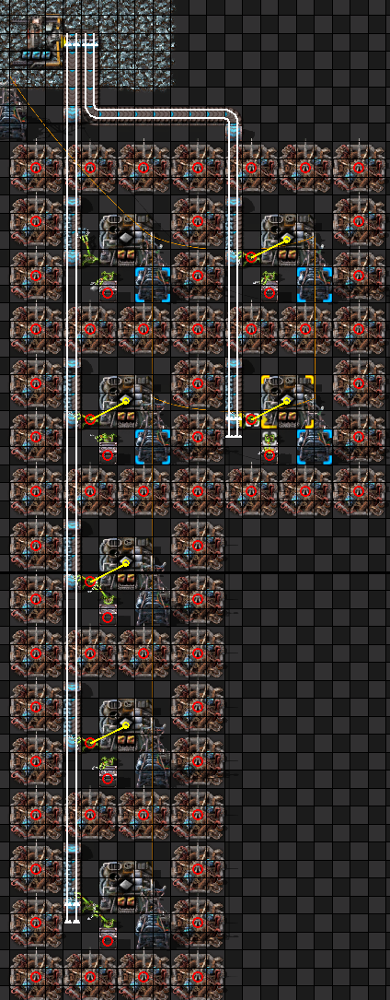
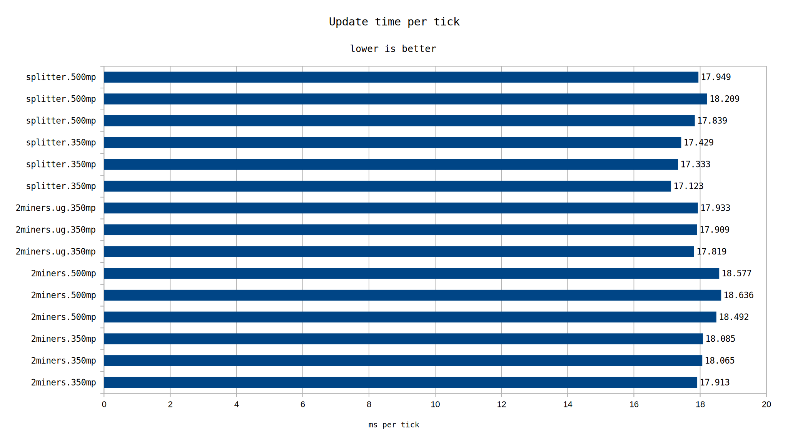
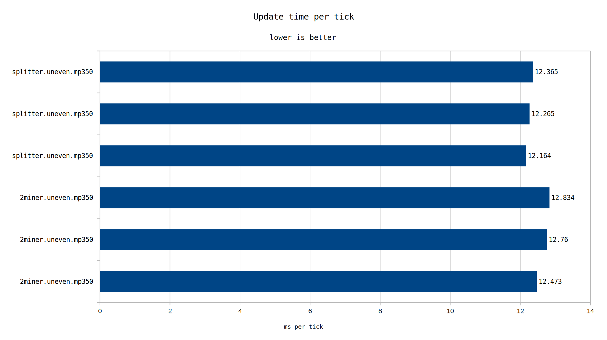

Using one miner and one splitter still appears to be better than using two miners to achieve the same thing.
test-000031 explored the performance of miners, comparing using two miners to using one miner and a splitter. A few cases not explored in that test will be explored here.
One case we will explore is what happens as mining productivity increases. Another is what happens when the entire belt contents aren't consumed, or each lane of the splitter isn't consumed evenly.
The test consists of otherwise identical maps cloned to a large amount of production (50k SPM basis, but I may have gone a bit past that here). There consists 10 furnaces fed by either one or two miners, each furnance beaconed to full.

Two miners feeding two belts each feeding 5 furnaces

One miner going into a splitter to feed the two furnance columns
Additionally, these two designs were tested at mining productivity 350 and mining productivity 500. (350 being the theorized optimal productivity level for the splitter case, as it yeilds exactly 45 items / second with 3x speed module 3). An additional option of adding undergrounds after the miner to force the transport line split sooner is included.

Uneven usage using two miners

Uneven usage using a splitter
The third scenario is to test uneven usage, to see if the splitter usecase falls off. This removes 3 furnances from one of the columns.
Each design was saved in a map and then each of the maps was benchmarked using the inbuilt Factorio benchmark 3 times at 1040 ticks each (1040 is a multiple of 26 ticks, the swing time for a stack inserter). Care was taken to put each design in the same starting position before cloning to minimize the chance of performance effects due to chunk positioning.


All maps will be uploaded here.
Splitters hold on to the lead, but both perform fairly similarly.